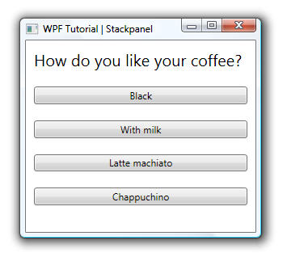
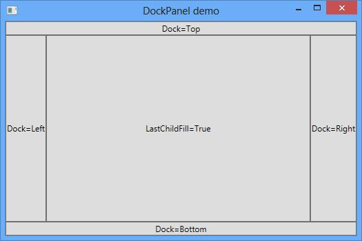
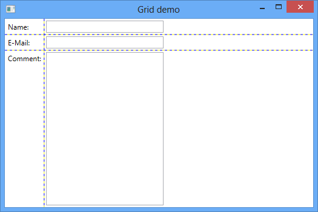
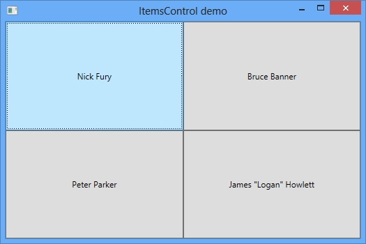

Eseményvezérelt alkalmazások fejlesztése 2.
8. gyakorlat - Windows Presentation Foundation alapjai 2.
- Nemrégen indult a Coursera-n két online (ingyenes) kurzus:
- Aki szeretne megismerkedni a Scala nyelv alapjaival (illetve a funkcionális programozás alapelveit is szeretné újra átismételni), annak a második elõadás sorozatot ajánlom.
- A Reactive Programming az aszinkronos programozást tudja nekünk nagyon leegyszerûsíteni, úgy, hogy maga a kódolvashatóság is megmarad.
- A Reactive Programming pedig egy .NET-es technológiával is kapcsolatban van: ez lenne az Rx (Reactive Extensions). Rengeteg mindenre használható, GUI készítések tekintetében az eseményekre való reagálást lehet nagyon egyszerûen kezelni vele. Akit jobban érdekel a téma, az nézze meg az elsõ elõadás sorozatot, illetve elérhetõ az Rx-hez egy magyar nyelvû jegyzet a devportal-ról.
- A WPF-ben a vezérlõket csak szülõelemekbe tudjuk helyezni. Ezek lehetnek olyan vezérlõk, amik egy gyerekvezérlõ megjelenítésére szolgálnak (ContentControl), esetleg egyszerre többre (ItemsControl), illetve rétegekbe (Panel) is helyezhetjük õket, amiknek segítségével valamilyen alakzatba rendezi azokat. A következõ diákon ezekrõl a rétegekrõl (panelekrõl) lesz szó.
- De honnan is tudja a WPF, hogy hogyan kell elhelyezni a vezérlõket egy adott elemen belül? Hiszen ahhoz, hogy minden pontosan illeszkedjen pár információra mindenképpen szüksége van. Elõször is tudnia kell, hogy az adott vezérlõnek pontosan mennyi helyre is lesz szüksége (measure). Ha ezek az információk összegyûltek, akkor jön a tényleges elhelyezése a vezérlõknek (arrange), ahol már pontosan tudjuk, hogy mennyi hely áll rendelkezésre és ennek alapján kell kirajzolni az adott vezérlõt.
- Az elõbbi technikával akár már mi is egyszerûen készíthetünk saját készítésû rétegeket, egyszerûen csak úgy, hogy leszármaztatunk a Panel osztályból, vagy a már meglévõkbõl.
- Canvas: Talán az egyik legegyszerûbb panel, hiszen a felhasználó pixel pontosan adhatja meg, hogy éppen hol helyezkedjen el az adott vezérlõ. Nem igazán szeretjük, hiszen valójában abszolút pozicionálás történik, ami teljesen ellentmond a WPF alapelveinek, ezért ha lehet csak nagyon speciális helyzetekben használjuk. A pozicionálásokat a Canvas.Left és Canvas.Top tulajdonságokon keresztül tehetjük meg:

<Canvas>
<Rectangle Canvas.Left="40" Canvas.Top="31" Width="63" Height="41" Fill="Blue" />
<Ellipse Canvas.Left="130" Canvas.Top="79" Width="58" Height="58" Fill="Blue" />
<Path Canvas.Left="61" Canvas.Top="28" Width="133" Height="98" Fill="Blue"
Stretch="Fill" Data="M61,125 L193,28"/>
</Canvas>
- StackPanel: Egy másik nagyon egyszerû réteg, ami a gyerekelemeit egymásután veremszerûen helyezi el. Felsorolásokra nagyon jól használhat. Fontos megjegyezni, hogy az utolsó gyerek nem fogja kihasználni a rendelkezésére álló helyet. Az Orientation tulajdonságon keresztül kétféleképpen helyezhetjük el a gyerekeket a panelben: vízszintesen (Horizontal), illetve függõlegesen (Vertical). 
{kind=link}
<StackPanel>
<TextBlock Margin="10" FontSize="20">How do you like your coffee?</TextBlock>
<Button Margin="10">Black</Button>
<Button Margin="10">With milk</Button>
<Button Margin="10">Latte machiato</Button>
<Button Margin="10">Chappuchino</Button>
</StackPanel>
- DockPanel: A DockPanel nevéhez hasonlóan dokkszerûen rendezi el az elemeket attól függõen, hogy a vezérlõ DockPanel.Dock tulajdonságának mit állítottunk be. Ennek megfelelõen négy különbözõ irányba csoportosíthatjuk a gyerekelemeket: balra (Left), jobbra (Right), felülre (Top), illetve alulra (Bottom). Lehetõségünk beállítani a LastChildFill tulajdonságon keresztül azt is, hogy a legutolsó gyerek kitöltse a számára elérhetõ legnagyobb helyet. 
{kind=link}
<DockPanel LastChildFill="True">
<Button Content="Dock=Top" DockPanel.Dock="Top"/>
<Button Content="Dock=Bottom" DockPanel.Dock="Bottom"/>
<Button Content="Dock=Left"/>
<Button Content="Dock=Right" DockPanel.Dock="Right"/>
<Button Content="LastChildFill=True"/>
</DockPanel>
- Grid: A Grid az egyik leggyakrabban használt panel a WPF-ben. Rendkívül széleskörben lehet alkalmazni és nagyon sok esetben szolgálhat segítségül. Használata nagyon egyszerû, a ColumnDefinitions és RowDefinitions-on keresztül állíthatjuk be, hogy hány sora és oszlopa legyen és mekkorák legyenek azok (itt meg lehet adni abszolút méreteket is, de a * literállal arányokat defininálhatunk közöttük). Ezzel még nem vagyunk készen, mert a gyerekelemeknél is be kell állítanunk a Grid.Row és Grid.Column-on keresztül, hogy hol helyezkedjenek el azok, míg a Grid.RowSpan és Grid.ColumnSpan-al azt állíthatjuk be, hogy hány soron és oszlopon keresztül "nyúljanak" át.
- A ShowGridLines tulajdonság értékének igazra állításával vizuálissá tehetjük az oszlopok és sorok közötti elhelyezkedést, de ezt csak tervezéskor használjuk, kész kódnál sose!

{kind=link}
<Grid ShowGridLines="True">
<Grid.RowDefinitions>
<RowDefinition Height="Auto" />
<RowDefinition Height="Auto" />
<RowDefinition Height="*" />
</Grid.RowDefinitions>
<Grid.ColumnDefinitions>
<ColumnDefinition Width="Auto" />
<ColumnDefinition Width="200" />
</Grid.ColumnDefinitions>
<Label Grid.Row="0" Grid.Column="0" Content="Name:" />
<Label Grid.Row="1" Grid.Column="0" Content="E-Mail:" />
<Label Grid.Row="2" Grid.Column="0" Content="Comment:" />
<TextBox Grid.Column="1" Grid.Row="0" Margin="3" />
<TextBox Grid.Column="1" Grid.Row="1" Margin="3" />
<TextBox Grid.Column="1" Grid.Row="2" Margin="3" />
</Grid>
- Vannak olyan esetek, amikor a vezérlõnek valamilyen felhasználói interakcióra, esetleg valamilyen érték megváltozására reagálnia kell. Ilyen ez a reagálás lehet üzleti logika szintû, vagy csak valamilyen design-beli változás. A trigger-ek az utóbbira adnak egy nagyon hasznos megoldást, amivel egyszerûen és elegánsan tudunk reagálni az állapotváltozásokra.
- A trigger-ek használatának elve nagyon egyszerû. Ha megváltozik egy adott állapot értéke, akkor maga a kapcsoló, a neki átadott változásokat fogja végrehajtani az adott vezérlõn. Üzleti logika alkalmazására nem igazán való (de persze ezzel is lehet trükközni).
- Minden vezérlõnek meg lehet határozni különbözõ trigger-eket, viszont ezekben az esetekben meg van kötve a kezünk, ugyanis csak EventTrigger-eket lehet definiálni (ezek olyan kapcsolók, amik egy adott eseményre figyelnek, és ha kiváltódik, akkor aktíválódik maga a kapcsoló is). Stílusoknak és sablonoknak viszont bármilyen típusú kapcsolót meg lehet adni. Gyakran használt trükk szokott lenni ezért, hogy a stíluson keresztül adjuk meg a vezérlõnek a trigger-t.
<Button Content="Ok">
<!-- Sokszor bevett trükk, hogy stíluson keresztül adunk meg kapcsolót -->
<Button.Style>
<Style TargetType="Button">
<Style.Triggers>
<!-- Figyeljük az IsMouseOver tulajdonságot, ami ha igazra vált
(azaz, ha a felhasználó ráment az egérrel a vezérlõnkre), akkor
aktiválódjon a kapcsolónk
-->
<Trigger Property="IsMouseOver" Value="True">
<!--
Ha aktiválódott, akkor megváltoztatjuk a Content tulajdonságunk értékét.
Több Setter-t is definiálhatunk, ha azt szeretnénk.
-->
<Setter Property="Content" Value="Click on me!" />
</Trigger>
</Style.Triggers>
</Style>
</Button.Style>
</Button>
- A WPF lehetõséget nyújt a felhasználónak arra, hogy a különbözõ vezérlõknek stílusokat definiálhasson. Ezzel a módszerrel az ugyanolyan típusú vezérlõknek közös tulajdonságokat állíthatunk be egységesen anélkül, hogy azokat külön-külön nekünk kellene beállítani. Így a kódbázisunkat sokkal könnyebben lehet karbantartani, nem beszélve arról, hogy kevesebb kódot kell felügyelnünk.
- A stílusokkal szinte bármit be tudunk állítani: kapcsolókat, tulajdonságokat, eseményeket, így kellõen nagy szabadságot élvezünk a használatuknál.
<Style TargetType="Button">
<Setter Property="Cursor" Value="Hand" />
<Setter Property="Foreground" Value="Blue" />
<Setter Property="Template">
<Setter.Value>
<ControlTemplate TargetType="Button">
<ControlTemplate.Resources>
<Style TargetType="TextBlock">
<Setter Property="VerticalAlignment" Value="Center" />
<Setter Property="HorizontalAlignment" Value="Center" />
<Setter Property="TextDecorations" Value="Underline" />
</Style>
</ControlTemplate.Resources>
<TextBlock Text="{TemplateBinding Content}" Foreground="{TemplateBinding Foreground}"/>
</ControlTemplate>
</Setter.Value>
</Setter>
</Style>
- Stílusokat a Style osztály példányosítával lehet definiálni. A stílusoknak meg kell adni a TargetType tulajdonságon keresztül, hogy milyen típusú vezérlõkre szeretnénk alkalmazni azt.
- Minden vezérlõnek van egy Style nevû tulajdonsága, aminek ha értéket adunk, akkor a rendszer figyelembe veszi a stílusoknál megadott értékeket is.
- Másik lehetõség, hogy nem explicite adjuk meg a stílusokat, hanem valamelyik szülõelem Resources erõforrásai között példányosítjuk. Ezenbelül is két lehetõségünk van: ha nem adunk meg kulcsot az stílusnak (mint erõforrásnak), akkor minden azonos típusú vezérlõre automatikusan érvényes lesz az adott stílus a fa gyermekei között (kivéve ha explicite nem állítottunk be neki egy másik stílust). Ha viszont megadunk, akkor csak a StaticResource/DynamicResource segítségével tudjuk elérni explicite.
- Hogy minél kevesebb legyen a kód duplikáció, ezért lehetõség van arra, hogy a már meglévõ stílusból örököltessünk tulajdonságokat, majd a meglévõket megváltoztassuk, illetve új tulajdonságértékeket állítsunk be. Ezt a BasedOn tulajdonságon keresztül tudjuk megtenni.
- A tulajdonságokat és eseményeket különbözõ SetterBase osztály leszármazottjaival lehet megadni a Style.Setters tulajdonságon keresztül.
<Style TargetType="TextBlock">
<Style.Setters>
<Setter Property="Background" Value="Red" />
</Style.Setters>
</Style>
<Style TargetType="TextBlock">
<Setter Property="Background" Value="Red" />
</Style>
- Lássunk néhány példát a használatukhoz (MainWindow.xaml):
<Style TargetType="TextBlock" x:Key="TextBlockStyle">
<Style.Setters>
<EventSetter Event="MouseDown" Handler="TextBlockMouseDown" />
<Setter Property="Foreground" Value="White" />
<Setter Property="Background">
<Setter.Value>
<SolidColorBrush Color="Blue" Opacity="0.5" />
</Setter.Value>
</Setter>
</Style.Setters>
</Style>
//Az EventSetter-el beállított tulajdonság, amivel a MouseDown eseményre iratkoztunk fel
private void TextBlockMouseDown(object sender, MouseButtonEventArgs e)
{
var textBlock = sender as TextBlock;
if (textBlock != null)
MessageBox.Show(textBlock.Text);
}
<!-- Ahogy látható kívülrõl szinte nem látszik semmi se: -->
<TextBlock Style="{StaticResource TextBlockStyle}">Hello World!</TextBlock>
- A WPF-ben az eddig megismert technológiáktól eltérõen egyszerûen külön tudja választani a vezérlõk megjelenítését a funkcionalitástól. Az erre képes vezérlõket lookless control-oknak nevezzük.
- Miért jó ez nekünk? Egyszerûen azért, mert pusztán stílusok segítségével teljesen testreszabhatjuk a már meglévõ vezérlõinket úgy, hogy annak a funkcionalitása nem változik meg. Így nincs szükség arra se, hogy új osztályokat hozzunk létre származtatással, vagy alacsony szinten újrarajzoljuk az egészet csak azért, mert egy apró változtatást akartunk végezni rajta. Ezzel a szemlélettel hatalmas szabadságot kap a programozó a kezébe.
- Ha egy vezérlõ sablonját szeretnénk megváltoztatni, akkor a Template tulajdonságnak kell egy új ControlTemplate objektumot beállítanunk. Ezen belül már bármilyen külcsínt definiálhatunk az adott vezérlõnek.
- A ControlTemplate-nek mindig meg kell adni a TargetType tulajdonságán keresztül, hogy milyen típusú vezérlõnek szeretnénk megváltoztatni a külsejét.
- Ha a sablonon belül szeretnénk adatkötést használni az adott vezérlõ valamelyik tulajdonságára, akkor a Binding helyett használhatjuk a TemplateBinding markup extension-t.
- A ContentPresenter vezérlõ segítségével lehet egyszerûen megjeleníteni a vezérlõ tartalmát (azaz a Content tulajdonságon keresztül beállított értéket).
<Button Content="OK">
<Button.Template> <!-- A Template tulajdonságon keresztül állítjuk be az sablont -->
<ControlTemplate TargetType="Button">
<!-- TemplateBinding segítségével érhetjük el a gombnak beállított háttérszínét -->
<Border CornerRadius="30"
Background="{TemplateBinding Background}">
<!-- Binding-al is meg lehet tenni, de akkor a relatív elérést kell használnunk -->
<Label VerticalAlignment="Center"
HorizontalAlignment="Center"
Foreground="{TemplateBinding Foreground}"
FontSize="25"
Content="{Binding Content, RelativeSource={RelativeSource TemplatedParent}}"/>
</Border>
</ControlTemplate>
</Button.Template>
</Button>
- A különbözõ panelekkel sokmindent meg tudunk jeleníteni, de a legnagyobb probléma velük, hogy nem dinamikus elemek kezelésére lettek kitalálva (ettõl függetlenül persze lehet azokra is használni). De erre van egy egyszerûbb és elegánsabb megoldás: ez pedig nem más, mint maga az ItemsControl vezérlõ (illetve a ListBox vezérlõ, ami annyival tud többet, hogy a felsorolt elemeket ki is tudja választani a felhasználó).
- Egyik legfontosabb tulajdonsága az ItemsSource, amin keresztül adhatjuk meg a vezérlõnek, hogy mely elemeket kell neki megjelenítenie. Tipikusan itt fogjuk összekötni a vezérlõt a nézetmodell megfelelõ kollekciójával.
<Grid xmlns:system="clr-namespace:System;assembly=mscorlib">
<Grid.Resources>
<!-- XAML-ben így készítünk tömböt: -->
<x:Array Type="system:String" x:Key="DataArray">
<system:String>Nick Fury</system:String>
<system:String>Bruce Banner</system:String>
<system:String>Peter Parker</system:String>
<system:String>James "Logan" Howlett</system:String>
</x:Array>
</Grid.Resources>
<ItemsControl ItemsSource="{StaticResource DataArray}" />
</Grid>
- Az ItemTemplate-en kereszül lehet beállítani, hogy maguk az elemek hogyan jelenjenek meg a vezérlõben. Itt teljesen szabadjára engedhetjük a fantáziánkat és szinte bármit megalkothatunk, amire nekünk szükségünk van.

<ItemsControl ItemsSource="{StaticResource DataArray}">
<ItemsControl.ItemTemplate>
<DataTemplate>
<Button Content="{Binding}" />
</DataTemplate>
</ItemsControl.ItemTemplate>
</ItemsControl>
- Nemcsak az elemek kirajzolását lehet beállítani, hanem magát azt is, hogy azok hogyan rendezõdjenek a vezérlõn belül. Ezt pedig az ItemsPanel segítségével lehet beállítani. Már ezzel a két tulajdonsággal egy nagyon erõs technikai megoldás kerülhet a kezeink közé. 
{kind=link}
<ItemsControl ItemsSource="{StaticResource DataArray}">
<!-- Itt állítjuk be az elemek elrendezését a vezérlõn belül ... -->
<ItemsControl.ItemsPanel>
<ItemsPanelTemplate>
<UniformGrid Rows="2" Columns="2" />
</ItemsPanelTemplate>
</ItemsControl.ItemsPanel>
<ItemsControl.ItemTemplate>
<DataTemplate>
<Button Content="{Binding}" />
</DataTemplate>
</ItemsControl.ItemTemplate>
</ItemsControl>
- Aki jobban belemélyülne a témába, akkor ezekbõl a könyvekbõl érdemes szemezgetni:
- Pro WPF 4.5 in C# Windows Presentation Foundation in .NET 4.5 (Matthew MacDonald) - Apress (link)
- WPF 4.5 Unleashed (Adam Nathan) - Sams Publishing (link)
- Windows Presentation Foundation 4.5 Cookbook (Pavel Yosifovich) - Packt Publishing (link)
- WPF Control Development Unleashed: Building Advanced User Experiences (Pavan Podila, Kevin Scott Hoffman) - (link)